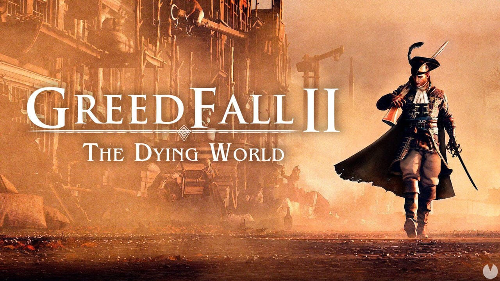
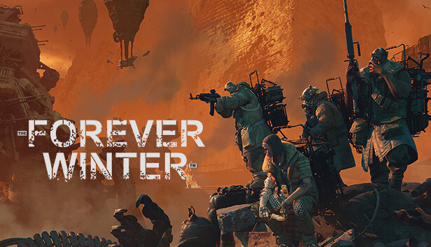
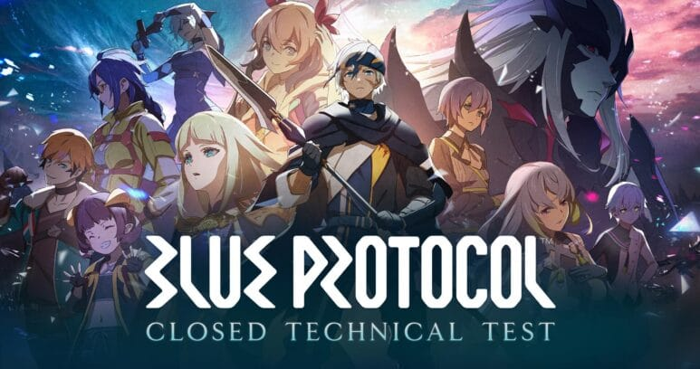
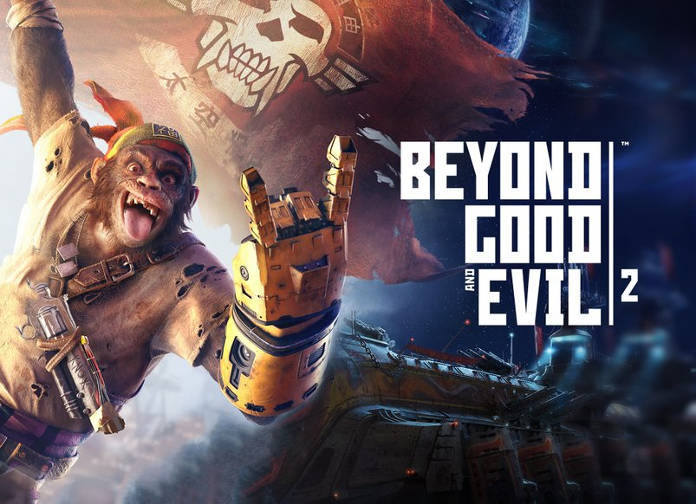
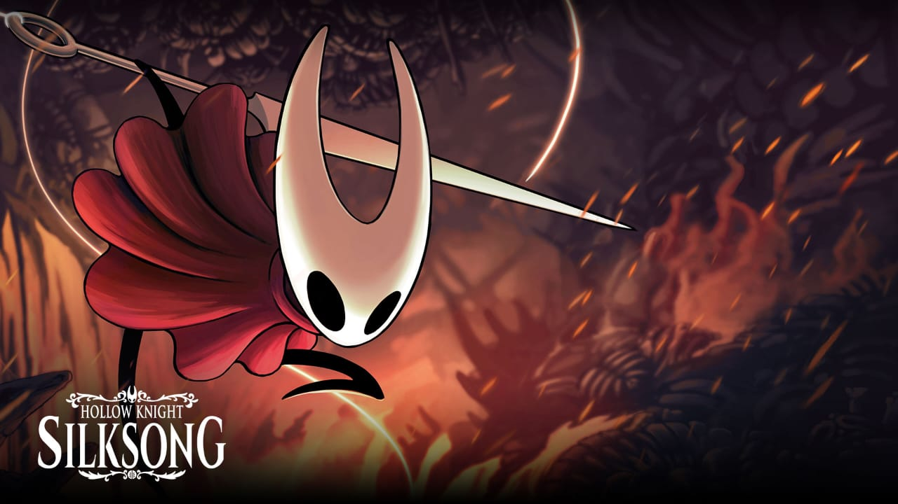
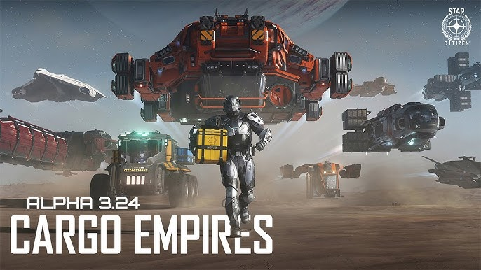
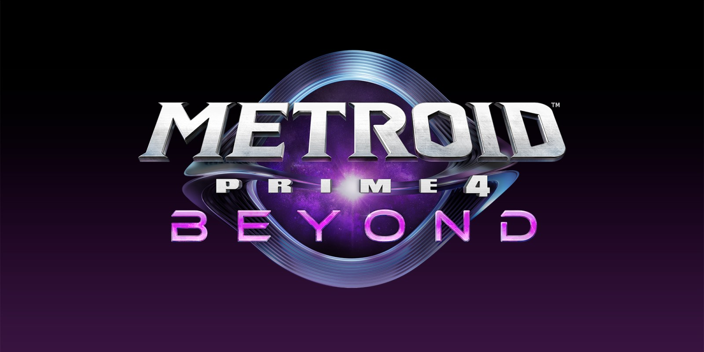
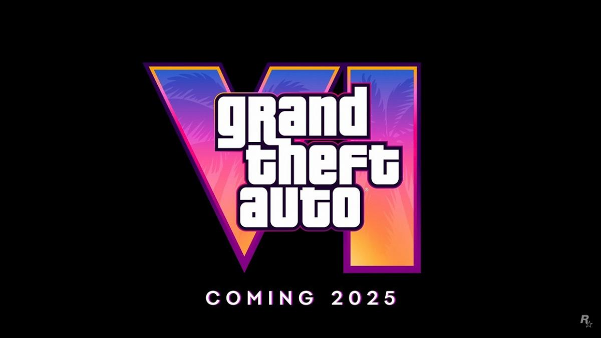

es un juego de estrategia por turnos
desarollado por Xbox game studio para PC.Un juego al estilo civilization en el
que tenemos que crear y gestionar nuestra propia nacion y avanzar
gestionar nuestra propia nacion y avanzar a travez de la historia, explorando
desarollando el arte , la cultura y la tecnologia, poniendo en practica la diplomacia
y enfretandote a otras naciones rivales.
genero:estrategia/estrategia por turnos
24/9/2024
Bloomtown: A Diferent Story
Bloomtown: A Diferent Story
es un rpg desarrollado Lazy Bear Games y different sense games y
publicado por Twin Sails Interactive Para Nintendo Switch y PC.
un jrpg narrativo por combates por turnos coleccionismo de criaturas
y elementos sociales ambientado en un mundo inspirado en los Estados Unidos
De los años 60´s, con una bonita estetica pixel art.
genero:jrpg/rol
24/9/2024
GreedFall 2: The Dying World

GreedFall 2: The Dying World
es un juego de acción y rol desarrollado por Spiders y publicado por Nacon para PlayStation 5
, Xbox Series y PC. La secuela del RPG lanzado en 2019 ambientado de nuevo un mundo de fantasía
inspirado en el siglo XVII, con una historia que transcurre tres años antes del primer juego,
y que en esta ocasión nos pone en la piel de un indígena que es llevado como esclavo al viejo
continente de Gacane, de donde son los colonos, un mundo antiguo y moribundo devastado por las
guerras, en una secuela más centrada en la exploración y con un combate mucho más táctico. genero:accion/rol
A la venta en España: Año 2025
24/9/2024
the forever winter

the forever winter
es un juego de accion y supervivencia desarollado y publicado
por Fun Dog Studios para PC. un juego de disparos supervivenciay tactica cooperativa
con ambientacion de terror, que se desarolla en un mundo postapocalitico, teniendo que sobrevivir
luchando contra soldados y gigantescas maquinas de guerra, con un original sistema
de encuentros dinamicos que hace que cada partida sea
impredecible
genero:shooter en primera persona/ shooter realista o tactico
/terror
24/9/2024
blue protocol PC PS5

blue protocol PC PS5
es el MMO de accion desarollado por bandai Namco para
consolas como PS5 y Xbox series , asi como PC .
nos traslada a un mundo fantasia y ciencia ficcion en el que compartir
experiencias con otros jugadores y vivir aventuras epicas
genero:MMORPG
24/9/2024
Beyond good & evil 2 PC PS4 XBOne

Beyond good & evil 2 PC PS4 XBOne
es la esperada segunda parte de uno de los
titulos de culto de la epoca PS2
iniciada para playstation 3 , el juego supuestamente llegara a la nueva generacion
de maquinas , aunque su estado es un misterio y quizas nunca llegue a la luz
genero:Aventura de accion / mundo abierto
fecha de lanzamiento: año 2026
24/9/2024
Hollow Knight: Silksong PC PS4 XBOne Switch PS5 XSX

Hollow Knight: Silksong PC PS4 XBOne Switch PS5 XSX
Hollow Knight: Silksong para Ordenador
Seguir
Hollow Knight: Silksong es la secuela de Hollow Knight, uno de los videojuegos de acción
y plataformas del estilo metroidvania más celebrados y exitosos de los últimos tiempos.
Encarnando a Hornet, princesa protectora de Hallownest, deberemos sobrevivir en un nuevo mundo
peligroso y desconocido.
genero:Metroidvania
Fecha de lanzamiento: Año 2024
24/9/2024
Alpha Protocol

Alpha Protocol
desarrollado por Obsidian Entertainment y publicado por Sega, es un videojuego de rol de acción lanzado
en 2010. Conocido por su enfoque en la elección y consecuencia, así como por su mecánica de juego de
espionaje, Alpha Protocol permite a los jugadores asumir el papel de Michael Thorton, un agente secreto que
opera fuera de las restricciones gubernamentales para desentrañar y detener una conspiración internacional.
Disponible para PlayStation 3, Xbox 360 y PC, el juego combina elementos de acción en tercera persona con
decisiones narrativas que afectan significativamente el desarrollo de la historia y las relaciones con
otros personajes. genero:espionaje
A la venta en España: 28/5/2010
24/9/2024
Metroid Prime 4

Metroid Prime 4
es una aventura de acción desarrollada Retro Studios y publicada por Nintendo para Nintendo Switch.
El esperado regreso de Samus Aran con una nueva aventura en primera persona, creada por los mismos
responsables de la trilogía original, en un juego con acción, plataformas, exploración y puzles, ofreciendo
una perspectiva única del género de los metroidvania, más popular que nunca. genero:estrategia/estrategia por turnos
A la venta en España: Año 2025
24/9/2024
Grand Theft Auto

Grand Theft Auto VI PC PS5 XSX
Grand Theft Auto VI o GTA 6 es la nueva entrega de la saga de aventuras y acción en mundo abierto de la saga
superventas GTA de Rockstar Games, que sentó las bases que luego han imitado todos los 'sandbox' posteriores.
Llega más de diez años después
de GTA 5, que ha vendido cerca de 200 millones de copias, y de superar las previsiones más optimistas gracias a
Grand Theft Auto Online, su componente multijugador. Está previsto para 2024 o principios de 2025 en PC y consolas
de nueva generación. genero:Mundo abierto / Tipo GTA
Fecha de lanzamiento: Año 2026
 Bloomtown: A Diferent Story
Bloomtown: A Diferent Story